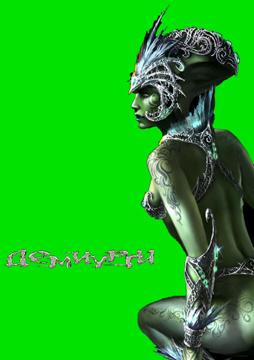
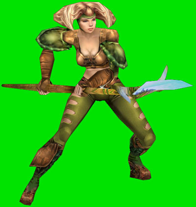

Назад
Содержание
Вперед
Pastor
И мне живется несладко,
Мне трудно нести свою ношу…"
Найк Борзов, "Лошадка"

Пацифисты! (виталы, как есть)
Сколько уже во всех играх было похожих на виталов рас? Много! В основном - эльфы, друид.
Но от смены названия играть легче не становится. И играть за них также приятно, как и против них - неприятно. Разберем несколько принципов составления колод виталов.
Общая концепция: получение быстрого эфира - "Эфирный родник" (1) дает +3 эфира или "Эфирный фонтан" (1) + 4 эфира.
На вас должны висеть заклинания, помогающие вашим войскам выживать и побеждать: "Силу леса" (4) +2 к атаке, "Господство" (4) +1/+1 всем вашим существам или "Стойкость леса" (4) +2 к защите. В начале боя очень помогает "Благословение" (2) +4/+4 одной твари до конца хода, а в финале - "Штурм" (4) - все Ваши кричи, получают +2/+2 и агрессивны и кровожадны до конца хода. Для восстановления жизней Вам: "Симбиоз" (4) + 2 хита Вам за каждую тварь в игре. "Оздоровление" (2) - многократное за единицу эфира получаем +2 хита. Как паранойя от всего - "Исцеление" (9) - восстанавливает все хиты до начальной величины. "Паутина душ" (1) за каждую отправленную в могилу тварь на поле, вы получаете +2 хита. "Просвещение" (3) - на каждый ход по + 1 заклинанию каждому герою.
Остальные заклинания разбирать будем на месте. Эти же - должны присутствовать в Ваших колодах. Может не все, но многие.
Принцип 1: "Мортейн" сюда!"
Ставка в этой колоде на клещей. Их должно быть много. Просто очень. Их принципиальная схема показана в дуэльной колоде виталов 5-го уровня. Идея: на второй ход в атаку идут минимум три клеща 2/2, а то и больше. Действия: на первом ходу - "Эфирный родник" два раза +3, +3 к эфиру. Колдуем "Эфирный урожай" (2) эфира - теперь за вызов каждой твари получаем +2 эфира. И всё. Колдуем "Рабочего клеща" (2) 0/2- все клещи получают +1/+1, колдуем "Королеву клещей" (2) 0/1- клещи получают +2 к защите. Как кончатся карты в руке, то доколдовываем или "Матку клещей" (4) 0/3 - клещи неутомимы, а она сама может вызывать за 4 эфира "Клеща-воина", ил "Силу леса". При идеальном раскладе в семь карт в руке, на второй ход в атаку пойдет королева (2/3)и рабочий клещ (3/3), потом добиваем врагов "Просвещением" и когда клещей много станет, да и враг тварей подостает, то колдуем "Симбиоз". При такой игре шансов на выигрыш у противника мало. Ибо клещей - 10 штук, у каждого хитов - до 10 - 15, причем ходу так на 5-м, 6-м… Вариант воздушной атаки или ухода в глухую оборону невыгоден. В первом случае - просто не успеваем дожить, а во втором - витал же колдует много "Силы леса", а увешанные модификаторами +1 (от рабочих клещей) и +2 (от каждой "силы леса") клещи получают где-то +6 - +7 атаки, а витал с количеством хитов 60 - 100 стоит и посмеивается. В сущности, победить могут только кинеты.
Пример: кинет - 1 хит, витал - 52 хита, в игре - 10 клещей, в руке витала - 5 карт. Кинет колдует "Великое развоплощение" (2) и возвращает всех клещей в руку витала, потом - "Удар по разуму" (1) (за каждое заклинание в руке больше чем 5 враг получает -3 хита) - и витал получает - 30. Повторяем "Удар по разуму" - ещё - 30…
Или же всё время держать на расстоянии врага "Туманом" и "Зеркалом", но для этого надо точно знать, против какой колоды играет кинет.
Принцип 2: "А ещё, они называли тебя червяком! Земляным червяком!"
Тут идея быстрой атаки змеями с поддержкой мантиссов и летающих ос. (Одна из моих любимых колод). До боев желательно отыскать заклинание, которое каждому виталу перед началом боя вызывает древесную змею. Само начало - или вызов "Травяная змея" (1) 1/1 или "Древесная змея" 1/1, или "Эфирный родник" +3 к эфиру, и потом одна из тех змей, а потом - "Болотная змея" (2) 2/2 или "Озерная змея" (2) 3/2. Принципы атаки змеями: они все имеют свойство первого удара, "Древесная" и "Болотная", в свою очередь, если добегают до противника и наносят ему повреждения, то в начале каждого хода тот будет получать -1 к хитам за каждый укус. (Соответственно - больше укусов - больше в минус уходит враг, а так как AI предпочитает блокировать тех, у кого атака больше, то обычно такие атаки проходят). Травяная змея после каждого укуса героя врага получает +1/+1 себе к показателям (в её отношении у AI тот же подход), соответственно после третьего хода она имеет уже +3/+3 и является грозным оружием. "Озерная змея" - на самом деле её показатели 4/2 к тварям врага, так как после каждого удара она отнимает от хитов вражьего существа НАВСЕГДА 1 хит. Средняя фаза боя - враг не дремлет и ходить в атаки змея становится опасно, колдуем "Симбиоз". И достаем мантиссов. На 6 ед. эфира - "Мантис" 4/4, на 8 - "Мантисс - летописец" 5/5, на 9 - "Мантисс-патриарх". Они обладают способностями: а) вампиры, б) заставляют отдыхать врага за то, что будут отдыхать сами: простой мантисс - любого, летописец - всех телохранителей, патриарх - всех существ одной расы (вот орки обламываются)… Или можно иметь в запаснике "Слепящую пыль" (2) - все существа противника, кроме неутомимых, отдыхают. И опять в атаку ломаются змеи, или ещё кто приблудился к ним. Также можно добить врага киданием в атаку мантиссов, а на всё поле кидаем "Спешку" (2) все создания ваши - кровожадны и агрессивны.
С таким раскладом можно пользоваться на начальных уровнях героя только змеями, но тогда их надо много, (по 2 слота в колоде), и набор их "Стойкости леса", "Силы леса", "господства" - вынос 20 - 32 хитов гарантирован.
Против такого, сильны хаоты с их заклятьями прямого выноса, да ещё сильные колоды с воздушными юнитами.
Однако колода виталов легко комбинируема и дает возможность включать летающих созданий (шершни, пчелы, злобоглазы). О последних. Не спорю, хороши злобоглазы, но во-первых дороги, а во-вторых - слишком неудобны в обращении. Для эффективно их использования нужно большое количество, а в игру они входят только хода с четвертого. К тому времени Вы уже будете ранены хитов так на -дцать…
Принцип третий: "Это "Ж-ж-ж" - неспроста!"
Колода пчел. Быстрых и злобных пчел. Начало боя - такое же, как у клещей - т.е. быстрое получение +2, +3 эфира, "эфирный урожай", и колдование: "Рабочая пчела" (1) 0/1 (дает всем пчелам +1 к атаке), получаем эфир, "Королеву пчел" (2) 0/2 - все пчелы получают +1/+1 к атаке, ну и просто "пчела-воин" (2) 1/1. Далее - "Матка пчел" (3) 0/2 - все пчелы получают первый удар, за 2 ед. эфира вызывает пчелу воина, после смерти матки все пчелы на один ход агрессивны. ВАЖНО: все пчелы, кроме воина, после нанесения повреждения герою противника умирают! Следовательно надо: сохранять маток (почти бесплатный вызов воинов), "Стойкость леса", "Сила леса", "Господство", ну, а если к врагу с ходу не пробиться - "Спешку". Цель - вынос с одного удара. Такой колодой надо играть очень виртуозно, после долгой практики другими.
Противостоят - Хаоты с заклятьем "Огненный ветер" (1) всем воздушным юнитам - Х хитов (Х=проплаченному эфиру). Синтеты с газовыми атаками - ставка на уменьшение атаки (при атака=0, идти в атаку существо не может).
Итог: виталы сильны своей стойкостью. Способность поднимать себе за эфир жизни стоит очень многого. Давят массой и в основном - по земле. Дать виталу развить атаку - значит умереть. Нужно разбивать чары, которые накидываются на войска, давить всех оружием массового поражения - заклятья, наносящие урон всем существам врага/ всем существам в игре. Прямое противостояние - крича на кричу, вы проиграете. Даже драконы и иже с ними.
Вся тактика витала строиться вокруг трех-четырех ключевых крич, которые в атаку могут и не ходить. Их надо выносить, а атаку - останавливать.
Тренируйтесь больше, и Вы сможете выработать свою тактику за или против виталов.
Успехов!

Назад
Содержание
Вперед